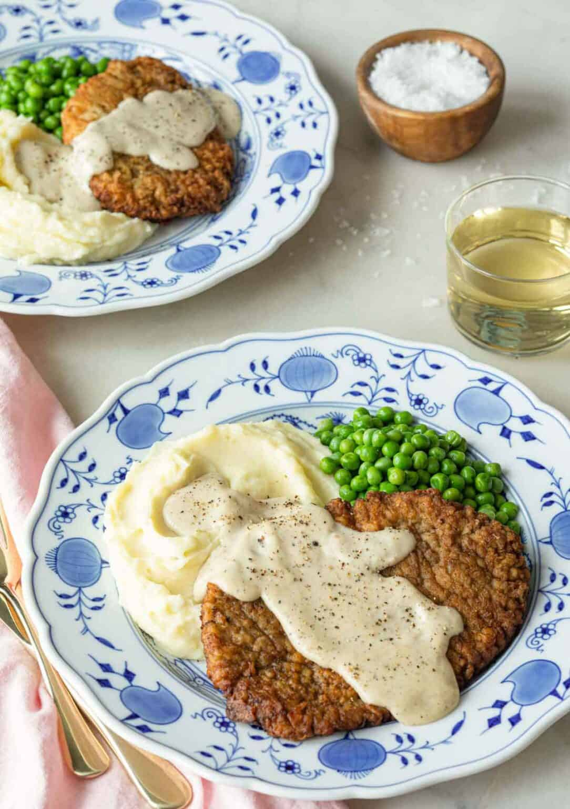

What is Chicken-Fried Steak?
The aptly named chicken-fried steak is a dish that fried in the same manner as fried chicken. This tenderized meat is coated with a seasoned flour mixture, then deep-fried to crispy perfection. Fun Fact: this dish is similar to Wiener Schnitzel--an Austrian dish of breaded and fried veal.
Chicken-Fried vs. Country-Fried Steak
While both are similar, they differ in that chicken-fried steak is often topped with a cream gravy, while country-fried is typically served with brown gravy and onions.
Best Cut
Your cut of choice for beef should be cube steak, or any steak variety that has already been tenderized.
How to make Chicken Fried Steak
- Prep Time: 20 mins
- Cook Time: 20 mins
- Total Time:40 mins
- Servings: 4
Pound the meat
Using a meat mallet, pound the steak until it's about a quarter-inch thick.
Make the Coating
Place two cups of flour in a shallor bowl and set aside. In another bowl, combine the baking powder, baking soda, 1 teaspoon of the pepper, and 3/4 teaspoon of the salt. Add buttermilk, hot sauce, egg, and garlic to the second bowl. Stir to combine.
Dredge and Fry
Heat vegetable shortening oil in a deep cast-iron skillet to 325 degrees F. While the shortening is heating, dredge a steak in flour and shake off the excess. Dip the entire flour-covered steak in the buttermilk mixture, then dredge it again in flour. Repeat with the remaining steaks. Fry steaks until evenly golden brown. Remove steaks and place on a paper towel-lined plate to drain.
Make the Gravy
Drain the fat from the skillet, reserving 1/4 cup and as much of the solid remnants as you can. Add the reserved fat and heat the skillet over medium-low heat. Whisk in the remaining flour. Add the milk and bring the gravy to a simmer. Cook until thick and season to taste. Serve over finished chicken-fried steaks.
Ingredients
- 4 (1/2) pound beef cube steaks
- 2 (1/4) cups all-purpose flour, divided
- 2 teaspoons baking powder
- 1 teaspoon baking soda
- 1 teaspoon black pepper
- 3/4 teaspoon salt
- 1 (1/2) cups buttermilk
- 1 tablespoon hot pepper sauce (e.g. TabascoTM)
- 1 large egg
- 2 cloves garlic, minced
- 3 cups vegetable shortening for frying
- 4 cups milk
- Kosher salt and ground black pepper to taste
Directions
- Step 1:
- Place steaks between 2 layers of plastic and pound to a thickness of 1/4 inch.
- Step 2:
- Place 2 cups flour in a shallow bowl
- Step 3:
- Stir together baking powder, baking soda, 1 teaspoon pepper, and 3/4 teaspoon salt in a second shallow bowl. Add buttermilk, Tabasco sauce, egg, and garlic; stir to combine.
- Step 4:
- Heat shortening in a deep cast-iron skillet to 325 degrees F (165 degrees C). Place a wire rack over a sheet of parchment paper.
- Step 5:
- While the shortening is heating, dredge a steak in flour to coat; shake off excess. Dip into buttermilk batter; lift up so excess batter drips back into the bowl. Press in flour again to coat both sides completely. Place breaded steak on the wire rack and repeat to bread remaining steaks.
- Step 6:
- Fry steaks, in batches if necessary, until evenly golden brown, 3 to 5 minutes per side. Remove steaks to a paper towel-lined plate to drain. Cover with foil to keep warm while you make the gravy.
- Step 7:
- Drain fat from the skillet, reserving 1/4 cup of the liquid and as much of the solid remnants as possible.
- Step 8:
- Return the skillet to medium-low heat; add teh reserved oil. Whisk the remaining 1/4 cup flour into the oil. Scrape the bottom of the pan with a spatula to release solids into the gravy.
- Step 9:
- Stir in milk, increase the heat to medium, and bring the gravy to a simmer. Cook stirring often, until thick, 6 to 7 minutes. Season with kosher salt and pepper.
- Step 10:
- Transfer steaks to a platter and pour gravy over top.
